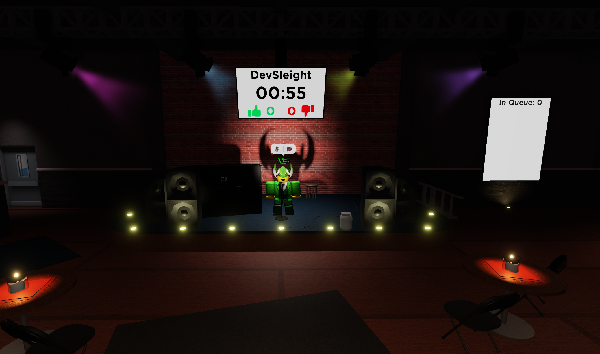
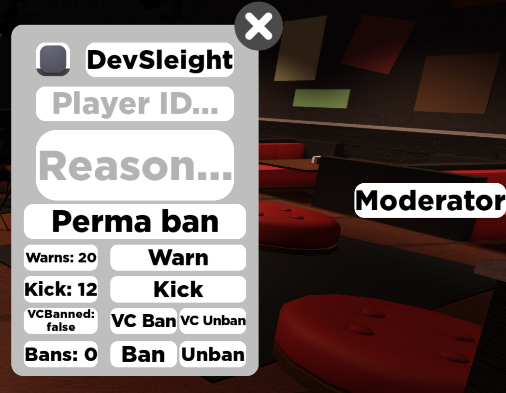

DevSleight
Gameplay Programmer
DevSleight
Gameplay Programmer
Open Mic Night is a social game powered by the Roblox Engine. Inspired by open mic live shows we wanted to create a place where players could display their talent and humor to others on the platform. Roblox had just released voice chat so this was the opportune moment to create Open Mic Night. The project was initially created in two weeks but has since been updated multiple times.
I was the only programmer working on Open Mic Night and decided that I wanted to try using more modules that already existed on Roblox rather than programming everything from scratch.
The original version only had a couple of features. Queuing to get on stage, liking and disliking the performance, earning coins and buying tomatoes to throw at the performer. The plan was to move the voice chat listener and lock people from moving. But that also affected hearing the audience and there was no way to mute players from the server. We decided that it was more fun to let people walk around. Roblox also lets you use your bought items across every game and letting players see and share their characters is a big part of Roblox.
Since Open Mic Night was a fairly simple project and we had data loss occurrences in Sled Simulator I decided this was a good opportunity to figure out a better way of handling saving. Instead of reinventing the wheel I tried two different datastore modules called Datastore2 and ProfileService. Out of these I found ProfileService easiest to use and have not run into any data loss since.
After Open Mic Night turned more towards a social game it became clear that moderation would be needed. For this I made a panel with functions that moderators could use to easily deal with rule breakers and have fun with. The moderator panel has sections for banning, teleporting, modifying their and others' character, x-ray and more.
This also meant dealing with unhappy players and moderators who acted on their own outside of the set guidelines and the situations they caused.